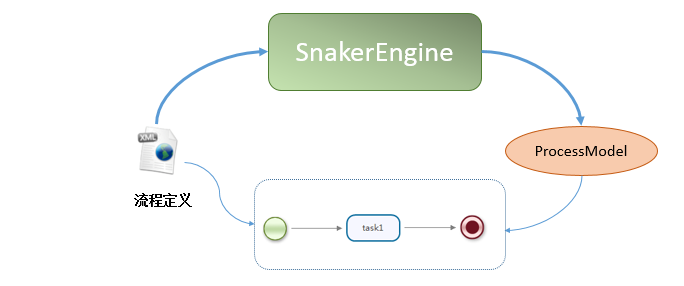
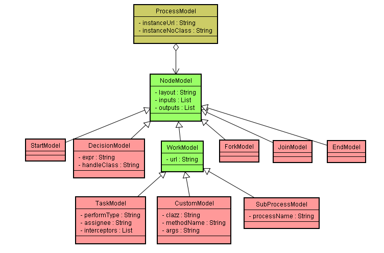
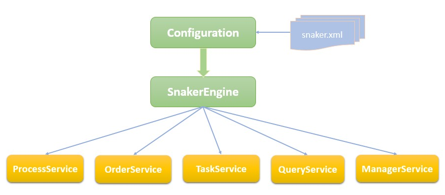
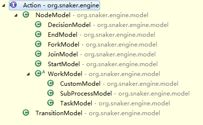
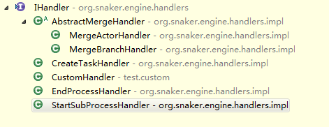
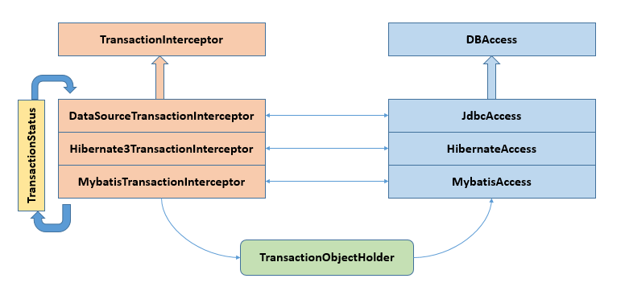
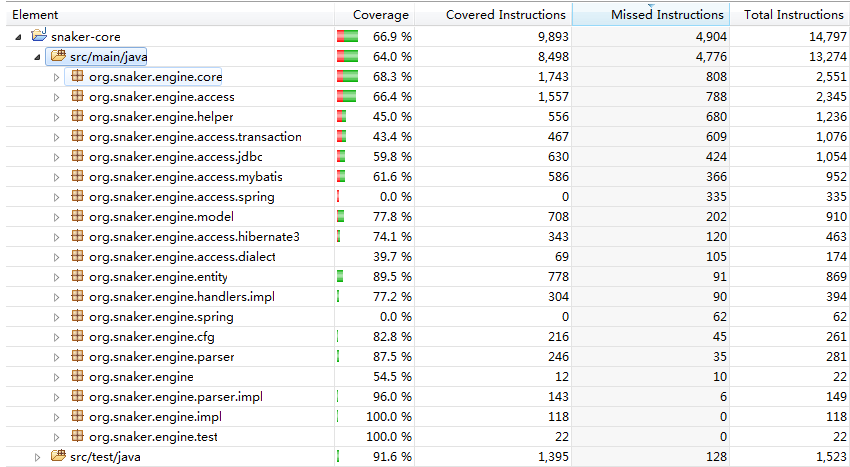

流程定义
流程定义文件以snaker作为后缀名，实际上是一个xml文件，流程引擎负责解析xml文件并且转换为 java对象ProcessModel，其中包含常用的组件模型(NodeModel子类).它们之间的关系如下图所示: 
Snaker崇尚简单，所以组件模型非常精简，主要由两类元素组成:
1)流转逻辑元素:StartModel,DecisionModel,ForkModel,JoinModel,EndModel
2)业务逻辑元素:TaskModel,CustomModel,SubProcessModel
流程服务

从上图可知，流程引擎SnakerEngine对象是由Configuration根据snaker.xml构建所得，并且包含四项服务:
1)ProcessService:负责部署、卸载、更新流程，并且可创建无流程定义的自由流程
2)OrderService:负责创建、更新、完成、终止流程实例
3)TaskService:负责创建、完成任务，并且可创建自由任务
4)ManagerService:负责提供与流程相关的管理服务
5)QueryService:负责与流程相关的查询操作
调度执行
Snaker所有的组件模型都实现了Action接口，该接口定义如下:
public interface Action {
/**
* 根据当前的执行对象由具体模型进行执行操作
* @param execution 执行对象
*/
public void execute(Execution execution);
}
一旦流程启动，后续执行交给具体的组件模型来控制。各组件模型根据当前传递的Execution对象来调度 处理器Handler实现类。
事务控制

如果与Spring集成，可以将事务管理交给Spring处理.如果使用API集成，由Snaker自己管理事务，则上图展现了事务管理的过程
由AOP+ThreadLocal+Status来实现基本的事务管理，与DBAccess之间通过TransactionObjectHolder来传递数据访问对象(Connection/Session/SqlSession...)
单元测试
单元测试覆盖率:(分析工具EclEmma)
目前对Snaker大部分的业务流程场景进行了测试，测试用例源码参考
https://github.com/snakerflow/snaker-core/tree/master/src/test/java/test